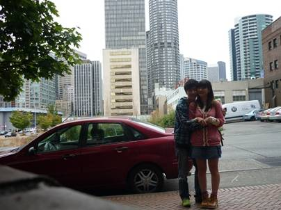
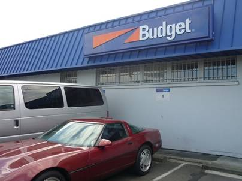
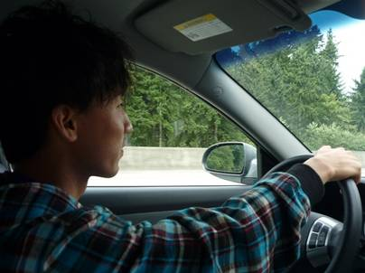
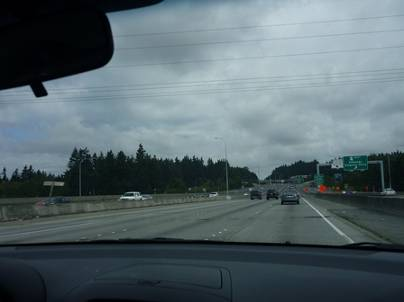
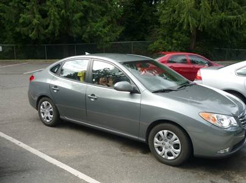
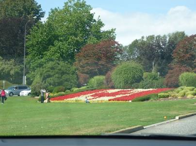
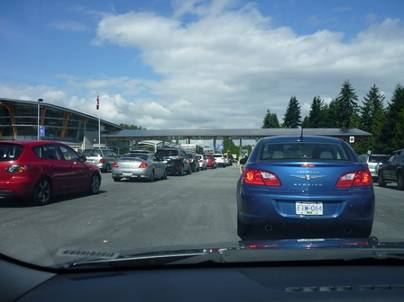
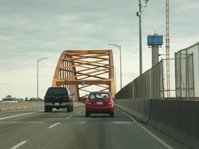
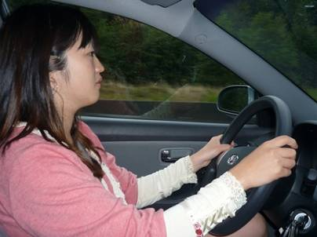
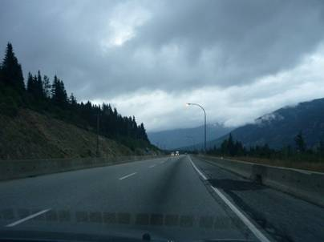

２日目(9/5)～再び国境を越え、カナダヘ～
toKamloops



あれだけ疲れていたのに一晩寝れば疲れは不思議とすっ飛んでしまった。シアトルの涼しい風がすがすがしい。つい昨日までうだる暑さの日本にいたのが信じられないくらいだった。昨日泊まった宿はSeattle City Hostel。バスディーポから近い市の中心部にあるにも関わらず、比較的安い。宿から歩いて１０分ほど歩いたところにバジェットレンタカーのオフィスがある。結構混んでいるのにおじさん一人が客の応対をしていたのでずいぶんと待たされてしまった。今回、３週間僕らの相棒となるのはアメ車ではなかった。


２時間弱運転したところでトイレ休憩。右の写真が僕らの相棒、HyundaiElantra！！コンパクトカーを頼んだのにまさかここまで大きい車を貸してもらえるとは思わなかった。1.8Lのエンジンは余裕のパワーを発揮し、オートクルーズ機能まで備えていた。走行音も静かで、全く文句なしだ。後に分かった燃費も15km/Lと日本車に劣らない性能。以前沖縄で借りたときは乗用車にも関わらずターボ無しの軽自動車のように音だけがうるさくて全く力の出なかったHyundai車がここまで進化していたとは・・・。韓国勢、恐るべし。


しばらく5号線を北上すると、バスで越えた国境へと戻ってきた。ちょうど日本の高速道路の料金所のようだ。

バンクーバー市街では一年半前の旅行でもお世話になった登山用品店のMountain Equipment Coop(MEC)に寄り、登山に必要な物を購入した。ザックと靴に加え、フライパンや熊よけの鈴も揃え、登山準備は万端だ。MECオリジナルのザックは名前で惚れたAlpine Light。価格は60Lサイズで日本円にして1万4千円ほど。非常に品質がよく、気に入った。チャックの部分が防水になっていたり、おしゃれなチェック模様の生地や、サイド部分がガバッと大きく開くつくりは日本で売られている安価な製品には見たことが無く、安くいい物を買うことができるカナダは登山をやる物にとっては天国だ。

バンクーバーからしばらく東へトランスカナダハイウェイ1号線を走る。アメリカと違い、車の数は少なくて走りやすい。西海岸から入った北米大陸の内陸へと向かう。郊外でまおに運転を交代。カナダでの運転のために二人とも国際運転免許を取得しておいた。

バンクーバーからフレイザー川沿いに300km程走ればカムループス(Kamloops)の町に着く。今夜はこの町で一泊する。近くのスーパー、Save on foodsですしを買い、夕飯にした。